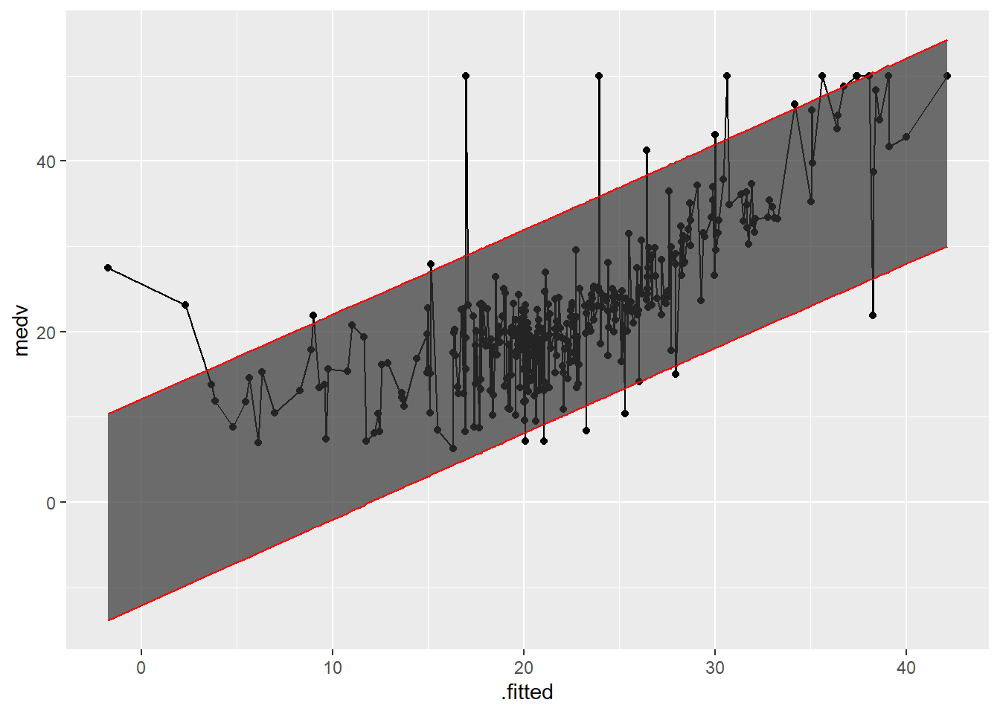

12 Prediction - Application
Here goes some texts.
12.1 Exercises
- Variable selection: Use variable selection methods, such as stepwise selection or best subset selection, to identify a subset of predictor variables that provide the best fit for a multiple linear regression model. Compare the performance of different models and discuss their relative strengths and weaknesses.
- Interaction effects: Include interaction terms in a multiple linear regression model to capture the effect of two or more predictor variables interacting with each other. Interpret the coefficients of the interaction terms and discuss their implications from a social science perspective.
- Polynomial regression: Use polynomial regression to model non-linear relationships between predictor variables and the response variable. Fit a polynomial regression model, generate predictions, and assess the model’s performance.
- Model comparison: Use model comparison methods, such as adjusted R-squared or AIC, to compare the performance of different linear regression models. Select the best model based on these criteria and discuss its strengths and weaknesses.
- Tidy models: Use the
broompackage to convert linear regression models into tidy data frames using functions such astidy(),glance(), andaugment(). Manipulate and visualize the tidy data frames to gain insights into the models and their performance. - Prediction intervals: Generate prediction intervals for new observations using a fitted linear regression model. Interpret the prediction intervals and discuss their usefulness for making predictions in a social science context.
Task 1: Use the mediation package to perform a mediation analysis with price as the outcome variable, rm as the treatment variable, and crim as the mediator variable. Estimate and report the average causal mediation effect (ACME), the average direct effect (ADE), the total effect, and the proportion mediated. Explain what these effects mean and how to interpret them.
# Load the mediation package
library(mediation)
# Fit a linear regression model with crim as the mediator variable
fit3 <- lm(crim ~ rm, data = BostonHousing)
# Fit a linear regression model with price as the outcome variable
fit4 <- lm(medv ~ rm + crim, data = BostonHousing)
# Perform a mediation analysis with price as the outcome variable, rm as the treatment variable, and crim as the mediator variable
med.out <- mediate(fit3, fit4, treat = "rm", mediator = "crim", sims = 1000)
# Estimate and report the average causal mediation effect (ACME), the average direct effect (ADE), the total effect, and the proportion mediated
summary(med.out)##
## Causal Mediation Analysis
##
## Quasi-Bayesian Confidence Intervals
##
## Estimate 95% CI Lower 95% CI Upper p-value
## ACME 0.7042 0.4170 1.06 <2e-16 ***
## ADE 8.3994 7.5494 9.14 <2e-16 ***
## Total Effect 9.1036 8.2886 9.91 <2e-16 ***
## Prop. Mediated 0.0765 0.0465 0.11 <2e-16 ***
## ---
## Signif. codes: 0 '***' 0.001 '**' 0.01 '*' 0.05 '.' 0.1 ' ' 1
##
## Sample Size Used: 506
##
##
## Simulations: 1000The ACME is estimated to be 0.7042, with a 95% confidence interval of [0.4170, 1.06]. This means that crim is estimated to increase price by 0.7042 units on average, for each unit increase in rm. The p-value is less than 2e-16, indicating that this effect is statistically significant at the 5% level.
The ADE is estimated to be 8.3994, with a 95% confidence interval of [7.5494, 9.14]. This means that rm is estimated to increase price by 8.3994 units on average, after controlling for crim. The p-value is less than 2e-16, indicating that this effect is also statistically significant at the 5% level.
The total effect is estimated to be 9.1036, with a 95% confidence interval of [8.2886, 9.91]. This means that rm is estimated to increase price by 9.1036 units on average, without controlling for crim. The p-value is less than 2e-16, indicating that this effect is also statistically significant at the 5% level.
The proportion mediated is estimated to be 0.0765, with a 95% confidence interval of [0.0465, 0.11]. This means that about 7.65% of the total effect of rm on price is mediated by crim. The p-value is less than 2e-16, indicating that this proportion is also statistically significant at the 5% level.
Task 2: Use the tidy() function from the broom package to create a data frame with the coefficients, standard errors, p-values, and confidence intervals of a linear regression model that predicts the median value of a home (MEDV) based on the nitric oxides concentration (NOX) and the average number of rooms per dwelling (RM).
## # A tibble: 3 × 7
## term estimate std.error statistic p.value conf.low conf.high
## <chr> <dbl> <dbl> <dbl> <dbl> <dbl> <dbl>
## 1 (Intercept) -18.2 3.34 -5.45 7.82e- 8 -24.8 -11.6
## 2 nox -19.0 2.53 -7.50 2.97e-13 -23.9 -14.0
## 3 rm 8.16 0.417 19.5 1.04e-63 7.34 8.98The results show that both NOX and RM are significant predictors of MEDV, with RM having a positive effect and NOX having a negative effect.
Task 3: Use the glance() function from the broom package to create a data frame with the R-squared, adjusted R-squared, root mean squared error, and other summary statistics of the linear regression model from task 1.
## # A tibble: 1 × 12
## r.squared adj.r.squared sigma statistic p.value df logLik AIC BIC
## <dbl> <dbl> <dbl> <dbl> <dbl> <dbl> <dbl> <dbl> <dbl>
## 1 0.535 0.534 6.28 290. 1.83e-84 2 -1646. 3301. 3317.
## # ℹ 3 more variables: deviance <dbl>, df.residual <int>, nobs <int>The results show that the model has an R-squared value of 0.535, indicating that it explains about 53.5% of the variance in the median value of a home (MEDV). The adjusted R-squared value is slightly lower at 0.533, indicating that the model is not overfitting.
Task 4: Use the predict() function to generate predicted values and prediction intervals for the median value of a home (MEDV) based on the linear regression model from task 1, and add them as new columns to the test data set. Use the caret package to create a train-test split of the data set with 70% of the data for training and 30% for testing.
library(caret)
set.seed(123)
trainIndex <- createDataPartition(BostonHousing$medv, p = .7, list = FALSE)
trainData <- BostonHousing[trainIndex,]
testData <- BostonHousing[-trainIndex,]
model <- lm(medv ~ nox + rm, data = trainData)
testData$predicted_MEDV <- predict(model, testData)
testData$pred_interval <- predict(model, testData, interval = "prediction")Task 5: Use the augment() function from the broom package to create a data frame with the observed and predicted values, residuals, and other diagnostic measures for the linear regression model from task 1. Use the geom_ribbon() function from the ggplot2 package to create a plot of the predicted values versus the observed values, with prediction intervals as ribbons. Use the rmse() function from the Metrics package to calculate the root mean squared error of the predictions on the test data set.
augmented_data <- augment(model, interval= "prediction")
ggplot(aes(x=.fitted,y=medv), data=augmented_data)+
geom_point()+
geom_line(aes(x=.fitted,y=medv))+
geom_ribbon(aes(ymax=.upper,ymin=.lower),color="red",alpha=0.7)
## [1] 10.97645